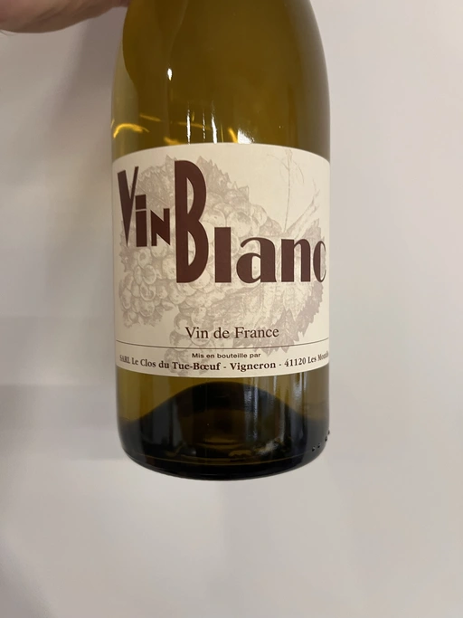
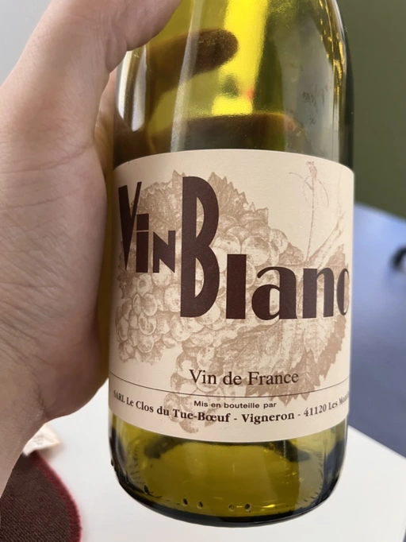
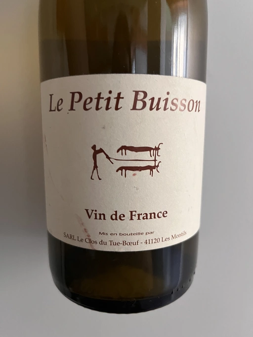

- Type
- White Still, Dry
- Producer
- Clos du Tue-Boeuf
- Vintage
- 2018
- Location
- France, Touraine AOC
- Grapes
- Sauvignon Blanc
- Alcohol
- 12.7
- Sugar
- 0
- Price
- 620 UAH
- Cellar
- N/A
Producer
Run by Jean-Marie and Thierry Puzelat.
Ratings
2021-05-06 - 7.50
Супер приємне та свіже вино. На фоні дріжджів стиглі, майже печені яблука, айва та цитрусові. Яскравий та довгий смак, що еволюціонує. В смаку яблучна жуйка та аскорбінка. Круте вино, щоб розпочати вечір.
Super pleasant, clean and fresh wine. On the background of yeast, there are ripe, almost baked apples, quince and citrus. Bright, juicy, long and evolving aftertaste. Flavours of apple gum and ascorbic acid. Great wine to open an evening.
Related

Clos du Tue-Boeuf
Vin Blanc - 2021

Clos du Tue-Boeuf
Vin Blanc - 2019

Clos du Tue-Boeuf
Le Petit Buisson - 2020

Clos du Tue-Boeuf
Le Brin De Chevre Touraine - 2018

Clos du Tue-Boeuf
Le Petit Buisson - 2019

Clos du Tue-Boeuf
Pineau de Loire - 2021

Clos du Tue-Boeuf
Pineau de la Loire - 2018

Clos du Tue-Boeuf
Rouillon Cheverny - 2020

Pierre Frick
Gewürztraminer Grand Cru Steinert Macération Pur Vin - 2017

R. López de Heredia
Viña Tondonia Rosé Gran Reserva - 2010

Stella di Campalto
Choltempo Fiorello - NV